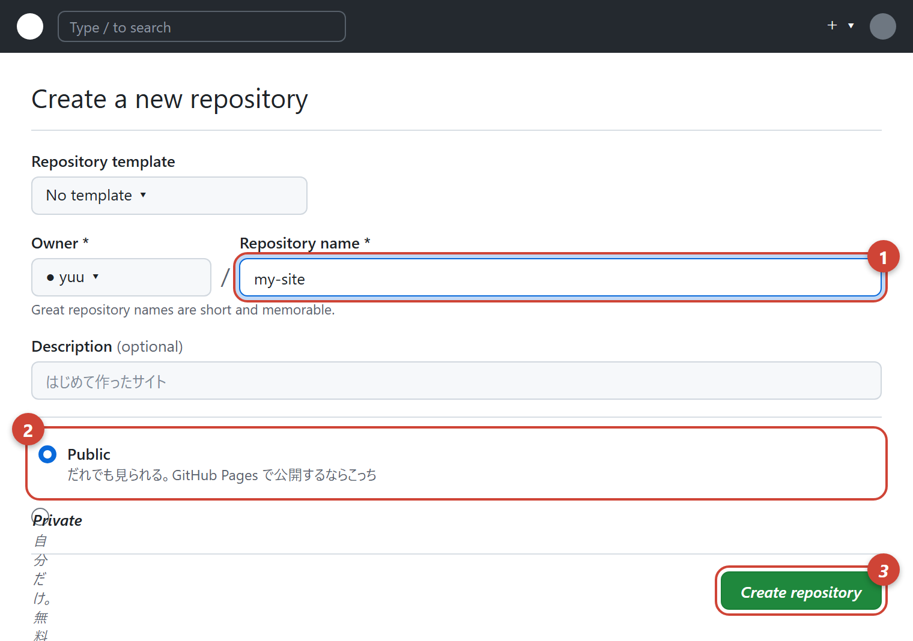
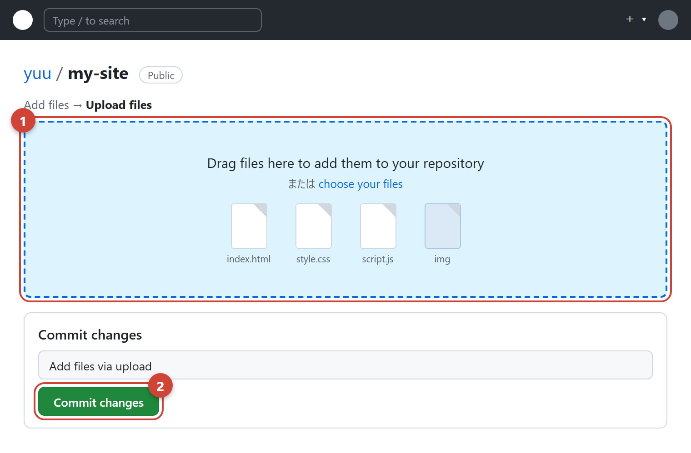
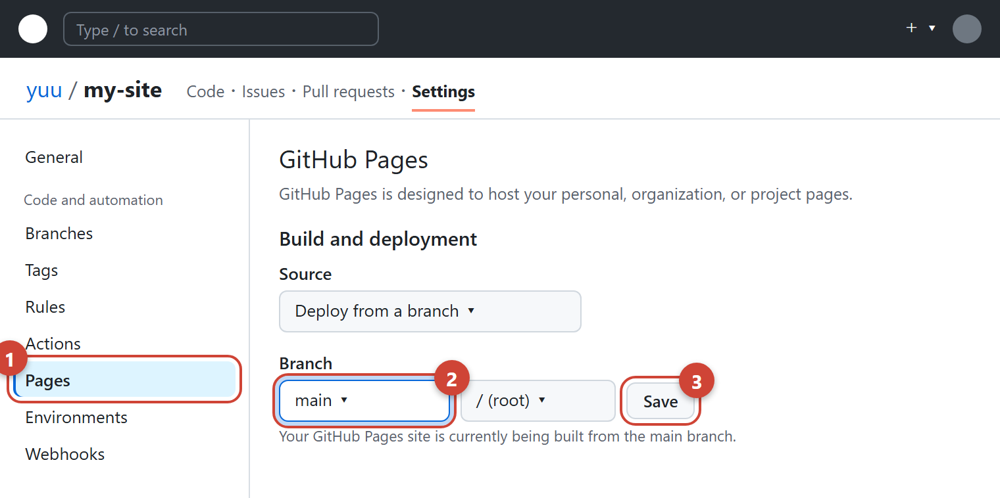
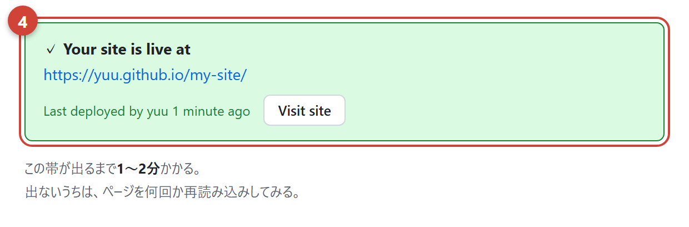
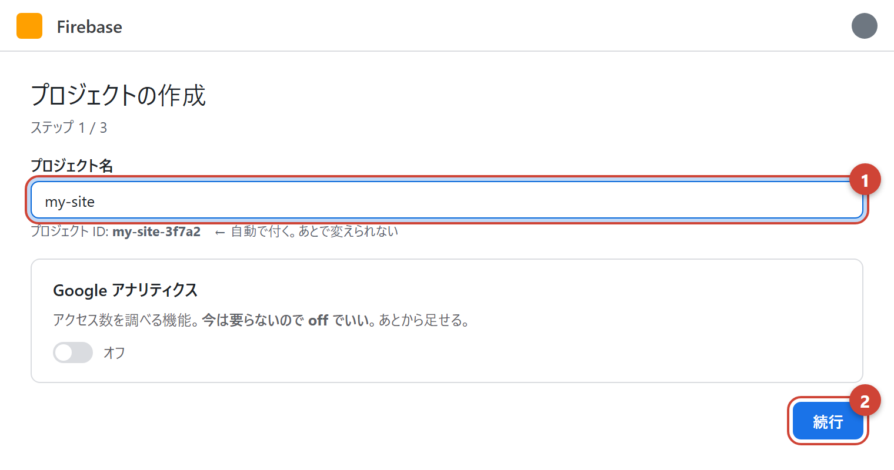
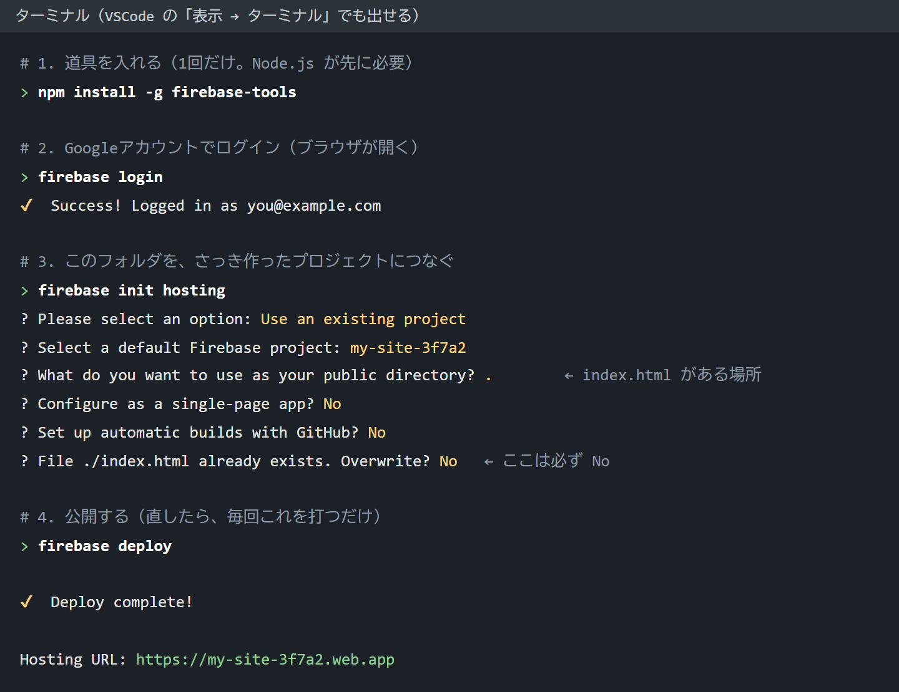

自分のパソコンの中にあるだけのサイトを、URLを送れば誰でも開ける状態にする。
どちらも無料。早いほうは15分で終わる。
| 場所 | 難しさ | 要るもの | 向いているとき |
|---|---|---|---|
| GitHub Pages | かんたん 15分 |
ブラウザだけ | まずはこれ。HTML・CSS・JS だけのサイトなら、これで何も困らない。 ファイルをドラッグして置くだけ |
| Firebase Hosting | ふつう 30分 |
Node.js ターミナル |
あとでFirestore や ログイン機能を足すつもりのとき。 同じプロジェクトにまとめられる |
| Netlify / Vercel | かんたん | ブラウザだけ | どちらも同じようにできる。GitHub Pages で困っていなければ、覚えなくていい |
見に来た人から見ると違いはほぼ無い。どちらも https で同じように出るし、速さも変わらない。 違うのは作る側の都合だけ。
| GitHub Pages | Firebase Hosting | |
|---|---|---|
| 置き方 | ブラウザでドラッグ＆ドロップ | ターミナルで firebase deploy |
| 反映まで | 1〜2分 | 数十秒 |
| URL | ユーザー名.github.io/リポジトリ名/← 途中に1段はさまる |
プロジェクト名.web.app← まっすぐ |
| コードが 見えるか |
全部見られる（無料だと Public しか選べない） | 見られない（配ったファイルだけが出る） |
| 他の機能 | 無い | Firestore・ログイン・画像置き場が同じプロジェクトにまとまる |
| 前に戻す | Git の履歴から戻す | コンソールで1クリック |
| 独自ドメイン | どちらも無料でできる。https も自動で付く | |
/ を付けたパスを書くと、公開した瞬間に全部消える。
✕ 壊れる
background: url(/images/sora.jpg);
ユーザー名.github.io/images/… を見に行ってしまう
○ 大丈夫
background: url(images/sora.jpg);
先頭の / を消すだけ。
この講座の書き方なら最初からこう
<!-- --> の中身も全部見えている）写真1.JPG のような名前は、公開先で出ないことがある。
photo1.webp のようにしておくブラウザだけで終わる。コマンドは1つも打たない。
github.com を開いて Sign uphttps://ユーザー名.github.io/…）。
本名は避けて、英数字で短いものにする右上の ＋ → New repository。

my-site）。スペースや日本語は使わない
② Public のまま（Private だと無料では公開できない）
③ Create repository を押す
できた画面の uploading an existing file（または Add file → Upload files）を押す。

index.html が一番上に来るように）
② Commit changes を押すと保存される
my-site フォルダごと入れると、URLが …/my-site/my-site/ になって
トップページが表示されない。
フォルダを開いて、中の index.html・style.css・img フォルダを選んで入れる。
上の Settings → 左のメニューの Pages。

main に
③ Save

同じリポジトリで Add file → Upload files に、直したファイルを入れ直して Commit changes。1〜2分で反映される。同じ名前のファイルは上書きされる。
あとで みんなで共有するデータ（感想・スコア・ログイン）を足すつもりなら、
最初からこちらにしておくと、同じプロジェクトの中でまとまる。
使い方そのものは Firebase のページ にまとめた。
console.firebase.google.com を開いて、Googleアカウントでログイン →
プロジェクトを追加。

先に nodejs.org から Node.js（LTS）を入れておく。
そのあと、VSCode の 表示 → ターミナル を開いて、上から順に打つ。

? で始まる行は質問なので、
矢印キーで選んで Enter。最後の Overwrite? は必ず No
（Yes にすると自分の index.html が消される）。
https://〇〇.web.app が自分のサイトのURL。ターミナルで firebase deploy を打つだけ。数十秒で反映される（GitHub Pages より速い）。
| やること | やり方 |
|---|---|
| スマホで開く | いちばん大事。URLを自分に送って、実機で見る。 パソコンで大丈夫でも、スマホで崩れていることがよくある |
| 横スクロールが出ていないか | 指で左右に動いてしまうなら、どこかがはみ出している。 便利CSS の「スマホ対応」を見る |
| 読み込みの速さ | 開くのに3秒以上かかるなら、たいてい写真が重い。 写真のページで軽くする |
| 人に送る | URLをそのまま送るだけ。相手に何かを入れてもらう必要はない |
| 症状 | たいていの原因 |
|---|---|
| 404 と出る | index.html が一番上の階層にない。
フォルダごと入れてしまっていないか確認する。
名前も Index.html ではなく全部小文字で |
| 真っ白 | まだ公開処理の途中。2〜3分待って再読み込み。 それでも白ければ F12 の Console を見る |
| 画像だけ出ない | 大文字小文字の違い。自分のパソコンでは
Photo.jpg と photo.jpg が同じ扱いだが、
公開先は別のファイルとして扱う。ここで一番よく詰まる |
| CSSが効いていない | 同じく大文字小文字か、css/style.css のようなフォルダの位置のずれ |
| 直したのに変わらない | ブラウザが古いほうを覚えている。Ctrl + Shift + R で強制的に読み直す。
スマホなら、いったんタブを閉じて開き直す |
| 日本語が文字化けする | <meta charset="UTF-8"> が
<head> のいちばん上にあるか |